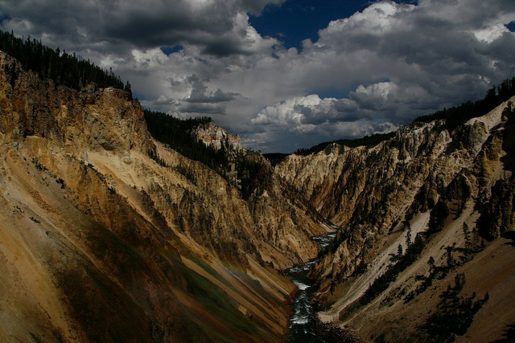

Wet Day in Yellowstone on Flickr.
Via Flickr: The Grand Canyon of Yellow during a somewhat rainy day a few years ago. I wish the rainbow showed up a little bit better in the picture, but it is an amazing view still!